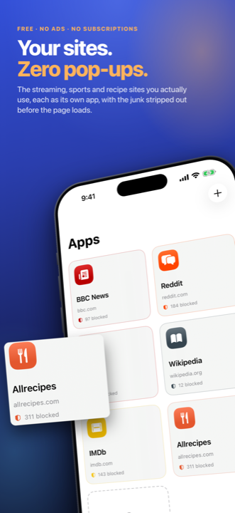
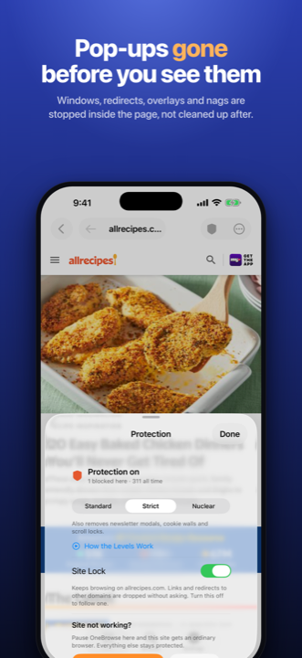
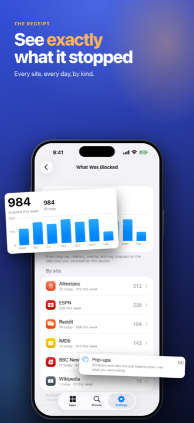
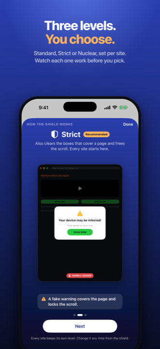
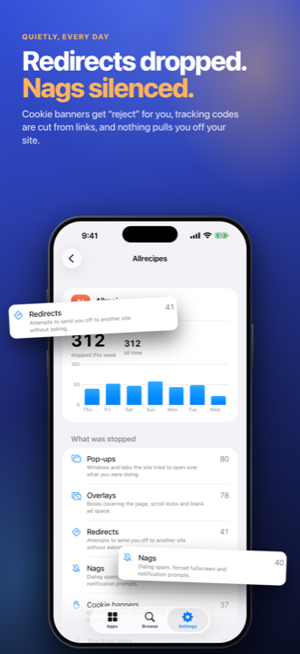
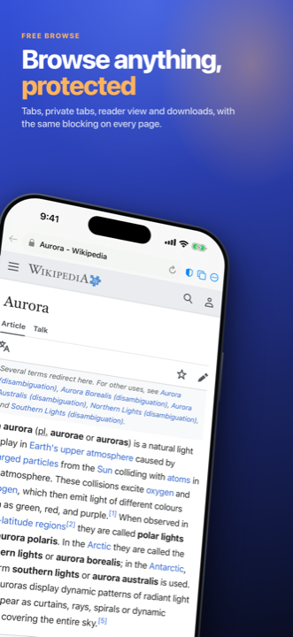

OneBrowse is a browser for the one or two sites you actually use: the streaming, sports and recipe sites that fight you on a phone. Pin a site, tap its button, and everything it throws at you — pop-ups, redirects, overlays, cookie walls — is stopped before you see it.
Download on the App Store





Pop-up windows are refused inside the page before the site's own code runs. Overlays are cleared, scrolling is unlocked, and redirects off your site are dropped without asking.
Standard stops pop-ups and leaves the page alone. Strict also removes the boxes that cover a page. Nuclear strips bars, chat bubbles and anything pinned over the content.
What Was Blocked shows every site, every day, by kind: pop-ups, redirects, overlays, nags, cookie banners answered and tracking links cleaned.
Free Browse gives you tabs, private tabs, reader view, downloads and a desktop-site switch, with the same blocking on every page. Make any page an app with one tap.
Sign in with Apple if you want your pinned sites, favourites and settings to follow you over iCloud. No account is needed to use the app. A Mac version is on its way.
A site's video goes to your TV as a stream, not as screen mirroring, so the phone stays free and the picture stays full resolution.
No ads, no subscriptions, no in-app purchases, and no server: there is nowhere for your data to go. Read the Privacy Policy — it is short.